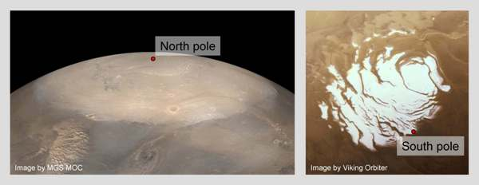

Evolution and dynamics of the Martian polar ice caps over climatic cycles
|

Polar ice caps of Mars.
Left: Permanent north polar cap, surrounded by the seasonal CO2 cap in late spring.
Right: Permanent south polar cap in summer. Note the offset with respect to the
south pole.
|
Work report
2005.04-2006.03 (PDF)
Work report
2006.04-2007.03 (PDF)
Keywords
Mars, Ice, Polar cap, Polar layered deposits, Climate cycle, Modelling
Project members
Principal investigator
Dr. Ralf Greve
Professor
Institute of Low Temperature Science
Hokkaido University, Sapporo, Japan
Research collaborators
Dr. Björn Grieger
Max Planck Institute for Solar System Research
Katlenburg-Lindau, Germany
Dr. Oliver J. Stenzel
Max Planck Institute for Solar System Research
Katlenburg-Lindau, Germany
Publications
Greve, R., B. Grieger and O. J. Stenzel. 2010.
MAIC-2, a latitudinal model for the Martian surface temperature,
atmospheric water transport and surface glaciation.
Planet. Space Sci. 58 (6), 931-940.
doi: 10.1016/j.pss.2010.03.002.
Greve, R. 2008.
Scenarios for the formation of Chasma Boreale, Mars.
Icarus 196 (2), 359-367.
doi:10.1016/j.icarus.2007.10.020.
Stenzel, O. J., B. Grieger, H. U. Keller, R. Greve, K. Fraedrich,
E. Kirk and F. Lunkeit. 2007.
Coupling Planet Simulator Mars, a general circulation model of the
Martian atmosphere, to the ice sheet model SICOPOLIS.
Planet. Space Sci. 55 (14), 2087-2096.
doi:10.1016/j.pss.2007.09.001.
Greve, R. 2006.
Fluid dynamics of planetary ices.
GAMM-Mitteilungen 29 (1), 29-51.
Research funding organisation
Institute of Low Temperature Science (ILTS).
Project type: ILTS Research Fund (Category 2).
Funding period: April 2005 - March 2007.
----------
Last modified: 2010-04-22